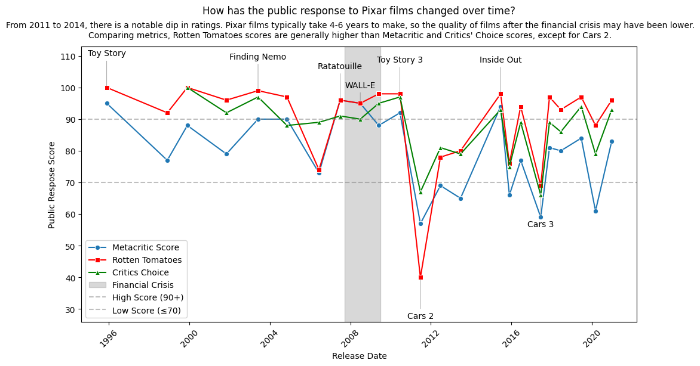

This package contains six data sets provided mostly by Wikipedia.
pixar_films - released and upcoming films
pixar_people - main people involved in creating films
genres - movie genres for each film
box_office - box office reception and budget information
public_response - critical and public response
academy - academy awards and nominations
Exploration questions
Why are some values missing in the datasets?
Which films have the highest score in each rating system?
Are there distinct differences in ratings?
Download the box_office dataset from the {pixarfilms} package.
How does the box_office_us_canada value compare to the various ratings?
Is the trend different for box_office_worldwide?
Download data
We can download the data using the PyDyTuesday library and specifying the date. This will load several files: - pixar_films.csv: data file. - public_response.csv: data file of public responses to Pixar films. - pixarfilms_hex.png: hex sticker for pixarfilms package. - meta.yaml: meta data file with information about the data files and the curator. - readme.md: readme file for this week’s Tidy Tuesday.
First, let’s read in the data and have a look. We’ll read in two CSV files: pixar_films.csv and public_response.csv.
import pandas as pdpf = pd.read_csv("pixar_films.csv")pr = pd.read_csv("public_response.csv")
We’ll look at pixar_films.csv first. We’ll use the great_tables library to format the output nicely. The data set contains the name, release date, run time (in minutes), and film rating of all Pixar films.
from great_tables import GT( GT(pf.head()) .tab_header(title="Pixar Films") .fmt_date(columns=["release_date"], date_style="wd_m_day_year"))
Pixar Films
number
film
release_date
run_time
film_rating
1
Toy Story
Wed, Nov 22, 1995
81.0
G
2
A Bug's Life
Wed, Nov 25, 1998
95.0
G
3
Toy Story 2
Wed, Nov 24, 1999
92.0
G
4
Monsters, Inc.
Fri, Nov 2, 2001
92.0
G
5
Finding Nemo
Fri, May 30, 2003
100.0
G
Next, we’ll look at public_response.csv, which contains different metrics of public response to each of Pixar’s films. Specifically, it contains information on the scores awarded to each film by Rotten Tomatoes, Metacritic, Cinema Score, and Critic’s Choice. Note: all scores are numeric out of 100 except the cinema score, which is a grade A+ to F.
( GT(pr.head()) .tab_header(title="Public Response to Pixar Films"))
Public Response to Pixar Films
film
rotten_tomatoes
metacritic
cinema_score
critics_choice
Toy Story
100.0
95.0
A
A Bug's Life
92.0
77.0
A
Toy Story 2
100.0
88.0
A+
100.0
Monsters, Inc.
96.0
79.0
A+
92.0
Finding Nemo
99.0
90.0
A+
97.0
Public Response over time
I’m interested in how critics’ scores change over time. It will be useful to merge the two data sets, so I have the information about release date together with public response.
number film release_date run_time film_rating rotten_tomatoes \
0 1 Toy Story 1995-11-22 81.0 G 100.0
1 2 A Bug's Life 1998-11-25 95.0 G 92.0
2 3 Toy Story 2 1999-11-24 92.0 G 100.0
3 4 Monsters, Inc. 2001-11-02 92.0 G 96.0
4 5 Finding Nemo 2003-05-30 100.0 G 99.0
metacritic cinema_score critics_choice
0 95.0 A NaN
1 77.0 A NaN
2 88.0 A+ 100.0
3 79.0 A+ 92.0
4 90.0 A+ 97.0
import matplotlib.pyplot as pltimport seaborn as snsdf_merged = pd.DataFrame(df_merged)# Convert release_date to datetimedf_merged["release_date"] = pd.to_datetime(df_merged["release_date"])# Define score thresholds for annotationhigh_threshold =90low_threshold =70# Plotplt.figure(figsize=(12, 6))sns.lineplot(data=df_merged, x="release_date", y="metacritic", marker="o", label="Metacritic Score")sns.lineplot(data=df_merged, x="release_date", y="rotten_tomatoes", marker="s", label="Rotten Tomatoes", color="red")sns.lineplot(data=df_merged, x="release_date", y="critics_choice", marker="^", label="Critics Choice", color="green")ax = plt.gca()plt.figtext(0.5, 0.90, "From 2011 to 2014, there is a notable dip in ratings. Pixar films typically take 4-6 years to make, ""so the quality of films after the financial crisis may have been lower. Comparing metrics, Rotten Tomatoes scores are generally ""higher than Metacritic and Critics' Choice scores, except for Cars 2.", wrap=True, horizontalalignment='center', fontsize=10, va="bottom")# add shaded region for the financial crisisax.axvspan(pd.to_datetime("2007-09-15"), pd.to_datetime("2009-06-30"), color="gray", alpha=0.3, label="Financial Crisis")# Annotate very high (>=90) or very low (<=70) scoresoffsets = [-15, 15] # Alternating vertical offset positionsfor i, row inenumerate(df_merged.itertuples()):# Ensure Critics Choice is not NaN (to avoid errors)if pd.isna(row.critics_choice): # If critics_choice is missing, use only Metacritic & Rotten Tomatoes all_high = (row.metacritic >= high_threshold and row.rotten_tomatoes >= high_threshold) all_low = (row.metacritic <= low_threshold and row.rotten_tomatoes <= low_threshold)else: # If critics_choice is available, use all three all_high = (row.metacritic >= high_threshold and row.rotten_tomatoes >= high_threshold and row.critics_choice >= high_threshold) all_low = (row.metacritic <= low_threshold and row.rotten_tomatoes <= low_threshold and row.critics_choice <= low_threshold)if all_high or all_low: y_offset =10if all_high else-13# Adjust label placement# Custom adjustment for a specific annotation (WALL-E)if row.film =="WALL-E": # Modify only this film's annotation y_offset =5# Lower it slightly by changing the offset ax.annotate( row.film, xy=(row.release_date, row.rotten_tomatoes), xytext=(row.release_date, row.rotten_tomatoes + y_offset), textcoords="data", ha='center', fontsize=10, arrowprops=dict(arrowstyle="-", lw=0.5, color='gray') )# Formattingplt.axhline(high_threshold, color='grey', linestyle='--', alpha=0.5, label=f"High Score ({high_threshold}+)") plt.axhline(low_threshold, color='grey', linestyle='--', alpha=0.5, label=f"Low Score (≤{low_threshold})")plt.ylim(df_merged[['metacritic', 'rotten_tomatoes', 'critics_choice']].min().min() -14, df_merged[['metacritic', 'rotten_tomatoes', 'critics_choice']].max().max() +13)plt.xlabel("Release Date")plt.ylabel("Public Respose Score")plt.title("How has the public response to Pixar films changed over time?", y=1.1)plt.legend()plt.xticks(rotation=45)plt.show()

It appears there is a significant dip in ratings between 2011 and 2014. It takes Pixar films about 4-6 years to be made. Therefore, the quality of films released in the 4-6 years following the financial crisis could have been lower. From looking at the rating scores over time, it looks like Rotten Tomatoes is consistently higher than Metacritic and Critic’s Choice, with the exception of the score for Cars 2. Below, we’ll look at the difference in mean score of each metric.
# Calculate mean and standard deviation for each scoring metricmetrics = ['metacritic', 'rotten_tomatoes', 'critics_choice']metrics_stats = df_merged[metrics].agg(['mean', 'std'])print(metrics_stats)
By determining the mean and standard deviations of scores for each metric, we see that Rotten Tomatoes is, on average, higher than the other scores, but also has the most variability.